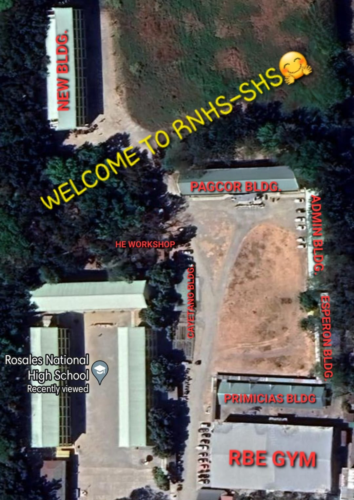

Your Gateway to Quality Education
Rosales National High School, located in the town of Rosales, Pangasinan, Philippines, is dedicated to providing quality education to its students. The school is renowned for its excellent academic programs, passionate educators, and modern facilities. It aims to empower the youth to become responsible citizens and contribute to the development of society.
To protect and promote the right of every Filipino to quality, equitable, culture-based, and complete basic education where: Students learn in a child-friendly, gender-sensitive, safe, and motivating environment. Teachers facilitate learning and constantly nurture every learner. Administrators and staff, as stewards of the institution, ensure an enabling and supportive environment for effective learning to happen. Family, community, and other stakeholders are actively engaged and share responsibility for developing life-long learners.
We dream of Filipinos who passionately love their country and whose values and competencies enable them to realize their full potential and contribute meaningfully to building the nation. As a learner-centered public institution, the Department of Education continuously improves itself to better serve its stakeholders.
The Department of Education was established through the Education Decree of 1863 as the Superior Commission of Primary Instruction under a Chairman. The Education agency underwent many reorganization efforts in the 20th century in order to better define its purpose vis a vis the changing administrations and charters. The present day Department of Education was eventually mandated through Republic Act 9155, otherwise known as the Governance of Basic Education act of 2001 which establishes the mandate of this agency. The Department of Education (DepEd) formulates, implements, and coordinates policies, plans, programs and projects in the areas of formal and non-formal basic education. It supervises all elementary and secondary education institutions, including alternative learning systems, both public and private; and provides for the establishment and maintenance of a complete, adequate, and integrated system of basic education relevant to the goals of national development.
Hail, Beloved Alma Mater Seat of our youthful days Light of the young and the brave Fountain of wisdom and knowledge, Wherein the fields of life we are Amidst defeat or victory Thy name we shall hold high Singing our praise unto thee Hail Beloved Alma Mater The Rosales National High School To thee we give and pledge our unstinted loyalty
Coloma st. Brgy. Don Antonio Village, Rosales, Pangasinan
Find your designated room building:
